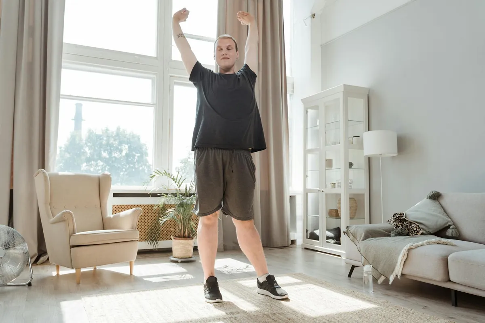

Biohacking for Beginners: Unlock Your Best Health & Energy Naturally
Key takeaways
- I remember staring at my alarm clock, dreading hitting snooze for the fifth time.
- My mornings were a fog, my afternoons a crash, and my evenings were spent scrolling, too tired to do anything meaningful.
- Focus on: Mastering Your Sleep: The Foundation of Everything.
I remember staring at my alarm clock, dreading hitting snooze for the fifth time. My mornings were a fog, my afternoons a crash, and my evenings were spent scrolling, too tired to do anything meaningful. I felt like I was running on empty, constantly chasing a version of myself that had more energy and focus. Sound familiar? If you're looking to finally unlock your best health and energy, you're in the right place. This guide breaks down the complex world of biohacking into simple, actionable steps anyone can take to optimize their sleep, nutrition, and daily routines for peak performance and well-being. Biohacking for Beginners: Unlock Your Best Health & Energy Naturally isn't about extreme measures; it's about smart, small changes that add up.
Forget the complicated tech and expensive gadgets for now. Real biohacking starts with understanding your body's fundamental needs. Think of it as fine-tuning your own operating system. We're talking about making your biology work *for* you, not against you. My own journey started with just trying to get a decent night's sleep. I was skeptical, but a few simple tweaks made a world of difference. I want to share that with you.
Let's dive into the core areas: sleep, nutrition, and movement. These are the pillars. Get these right, and you'll be amazed at how much better you feel. It’s not about perfection; it’s about progress. I’ve learned that the hard way.
Mastering Your Sleep: The Foundation of Everything
Sleep is where the magic happens. It's when your body repairs itself, consolidates memories, and regulates hormones. When I finally prioritized sleep, everything else started to fall into place. My energy levels stabilized, my cravings decreased, and my mood improved dramatically. It felt like I'd found a cheat code for life.
The Goal: Consistent, Quality Sleep
Aim for 7-9 hours of uninterrupted sleep. This means creating a sleep sanctuary and a wind-down routine. Think dim lights, no screens an hour before bed, and a cool, dark room. I even started using blackout curtains, and it was a game-changer.
The 2-Minute Win
Right now, grab a glass of water and drink it. Dehydration can mess with your sleep and energy. Make a habit of drinking water first thing in the morning and before bed.
Fueling Your Body: Smart Nutrition Choices
What you eat directly impacts your energy, mood, and overall health. I used to think I ate healthy, but I was still relying on processed snacks and sugary drinks to get through the day. Once I focused on whole, unprocessed foods, my energy levels soared, and I felt so much clearer.
Focus on Whole Foods
Prioritize vegetables, fruits, lean proteins, and healthy fats. Minimize processed foods, refined sugars, and artificial ingredients. It’s not about deprivation; it’s about choosing nutrient-dense options that truly nourish you. Think of your plate as a vibrant canvas.
Hydration is Key
Seriously, drink more water. I know, it sounds basic, but I can’t stress this enough. Proper hydration is crucial for energy production and cognitive function. Carry a water bottle with you and sip throughout the day. This is a simple yet powerful related healthy tip.
Movement That Energizes, Not Exhausts
Exercise is crucial, but it shouldn't leave you completely drained. The key is finding movement you enjoy and that supports your energy levels. I used to push myself too hard with intense workouts, which often left me more tired. Now, I focus on a balanced approach.
Listen to Your Body
Incorporate a mix of activities: strength training, cardio, and flexibility work. But also, don't underestimate the power of a simple walk. A brisk walk outdoors can do wonders for your mood and energy. It's a practical guide to boosting your day.
Incorporate Movement Throughout the Day
Take short breaks to stretch or walk around. Even small bursts of activity can make a difference. This helps combat the effects of prolonged sitting and keeps your metabolism humming. It's a similar wellness insight that's easy to implement.
My secret weapon for afternoon slumps? A quick 10-minute walk outside. The fresh air and movement are better than any coffee.
Simple Biohacking Wins for Daily Life
Biohacking doesn't have to be complicated. Here are a few easy wins to integrate today. These are small steps that contribute to staying consistent with this.
Morning Sunlight Exposure
Get outside for 5-10 minutes shortly after waking up. Natural light helps regulate your circadian rhythm, signaling your body it's time to be awake and alert. This is a powerful way to start your day feeling energized.
Mindful Breathing Exercises
When you feel stressed or overwhelmed, take a few minutes to focus on your breath. Inhale deeply through your nose, hold for a moment, and exhale slowly through your mouth. This simple practice can calm your nervous system almost instantly.
Consider Magnesium Glycinate
Many people are deficient in magnesium, which plays a role in sleep, energy, and stress management. Magnesium glycinate is a well-absorbed form that's often recommended for its calming effects and minimal digestive upset. If you struggle with sleep or anxiety, it might be worth exploring. You can explore more sleep guides here.
Educational only — not medical advice.
Disclosure: This page may contain affiliate links.
Recommended Reading
- What Daily Routines Truly Lower Stress Levels?
- Can Daily Routines Really Lower Stress Levels?
- Tired of Burnout? Simple Daily Stress Management
More in health

healthBoost Mobility: Nutrition & Movement Tips for Joint Comfort
Discover practical nutrition and movement tips to improve joint mobility and reduce discomfort. A relatable guide to fee
Read article →How to Boost Energy by Understanding Blood Sugar
Feeling drained? Learn how balancing your blood sugar can transform your energy levels. My personal journey and practica
Read article →Related posts
Boost Mobility: Nutrition & Movement Tips for Joint Comfort
Discover practical nutrition and movement tips to improve joint mobility and reduce discomfort. A relatable guide to fee
Read article →How to Boost Energy by Understanding Blood Sugar
Feeling drained? Learn how balancing your blood sugar can transform your energy levels. My personal journey and practica
Read article → health
healthUnlock Your Energy: Master Blood Sugar Levels
Tired of energy crashes? Learn how understanding blood sugar and energy balance can transform your day. Personal tips an
Read article →